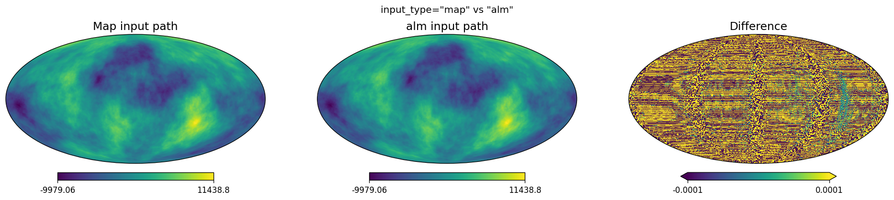

healpy harmonic_ud_grade vs skytools change_resolution: A Comparison
A comparison of healpy.harmonic_ud_grade and skytools.change_resolution for HEALPix map resolution changes, highlighting API differences, beam/pixel-window support, direct alm input, and agreement levels.
Comparing healpy.harmonic_ud_grade with skytools.change_resolution
This notebook compares two SHT-based HEALPix resolution-change functions: - healpy.harmonic_ud_grade (new in healpy, now with custom beam and reconvolution support) - skytools.change_resolution (github.com/1cosmologist/skytools)
Both functions analyse a map into \(a_{\ell m}\), optionally correct for beam and pixel-window functions, and synthesise at a new NSIDE. Both support custom (non-Gaussian) beam transfer functions and reconvolution at the same NSIDE.
Called with matching settings. The expected residual is numerical noise from different weighting strategies (healpy uses pixel-weights + optional iteration, skytools uses ring-weights).
Both libraries now support passing arbitrary beam transfer functions as arrays, not just Gaussian FWHM. This is essential for real instrumental beams that are often non-Gaussian (asymmetric, with sidelobes, etc.).
API difference in beam array format:
For temperature-only maps both use the same 1D shape (lmax+1,). For polarized maps the layouts differ:
healpy (beam_window_in / beam_window_out): matches the output of hp.gauss_beam(fwhm, lmax, pol=True) — a 2D array of shape (lmax+1, 4) with columns [T, E/B, T→E, T→B]. Column 0 is the temperature beam, column 1 is the polarization beam, and columns 2–3 are temperature–polarization cross-coupling terms. For simple unpolarized beams you can pass a 1D array or use only column 0.
skytools (beam_in / beam_out): a 2D array of shape (lmax+1, nmaps) where each column is the beam for the corresponding map component — column 0 = I, column 1 = Q, column 2 = U (no cross-coupling terms). For simple beams where T and polarization share the same beam, all columns are identical.
We use a cosine-tapered beam as a simple non-Gaussian example.
Custom beam residual (healpy vs skytools):
std=2.93e-03 max|diff|=2.73e-01
7. Reconvolution at same NSIDE
When nside_out == nside_in, both functions perform beam reconvolution: deconvolving the input beam and applying a new output beam at the same pixelisation. This is useful for changing the effective resolution of a map without changing its NSIDE — similar to the HEALPix process_alm facility.
skytools defaults nside_out to the input NSIDE when not specified, making reconvolution the default behaviour. healpy requires nside_out to be explicitly set.
Note on pixel weights: The beam deconvolution/reconvolution is applied in a single step as \(b_{\rm out}(\ell) / b_{\rm in}(\ell)\), so there is no amplification of high-\(\ell\) modes. However, healpy’s default use_pixel_weights=True produces \(a_{\ell m}\) that differ slightly from skytools’ ring-weighted SHT. At the same NSIDE these differences are not partially cancelled by a resolution change, so the residual shows a structured pixel-weight pattern. Using use_pixel_weights=False eliminates this pattern and matches skytools’ ring-weighted approach.
Reconvolution comparison:
healpy vs skytools: std=5.65e-02
healpy vs direct 30': std=4.15e+00
8. Direct \(a_{\ell m}\) input (input_type='alm')
healpy’s harmonic_ud_grade now accepts \(a_{\ell m}\) coefficients directly via input_type='alm', skipping the map2alm step. This is useful in simulation pipelines where you already have harmonics from a previous step. When using this mode, nside_in must be provided explicitly since it cannot be inferred from the \(a_{\ell m}\) array.
skytools does not have an equivalent — it always starts from a pixel-space map.
Map → harmonic_ud_grade: std=3.385528e+03
alm → harmonic_ud_grade: std=3.385528e+03
Difference (map vs alm input): std=5.988260e-03
The small difference comes from the map2alm round-trip in the map path.

Summary
After matching settings and correcting for the radian vs arcminutefwhm convention, healpy.harmonic_ud_grade and skytools.change_resolution agree closely for the downgrade cases. Residuals are dominated by the different SHT weighting strategies (pixel weights with optional iteration in healpy vs ring weights in skytools) and by the exact transform path used in each package:
Test
Latest residual
Temperature downgrade
σ ≈ 3.5×10⁻³
Polarization (T/Q/U)
σ ≈ 1.2×10⁻² / 2.7×10⁻³ / 2.7×10⁻³
Power spectrum (median frac. TT/EE/TE)
≈ 3.8×10⁻⁶ / 2.2×10⁻⁶ / 2.3×10⁻⁵
Beam re-convolution
σ ≈ 3.3×10⁻⁴
Pixel-window correction
σ ≈ 3.1×10⁻³
Custom beam (cosine-tapered)
σ ≈ 2.9×10⁻³
Reconvolution at same NSIDE
σ ≈ 5.7×10⁻²
Key API differences
Feature
healpy harmonic_ud_grade
skytools change_resolution
FWHM units
radians
arcminutes
Custom beam params
beam_window_in, beam_window_out
beam_in, beam_out
Custom beam format (T)
1D (lmax+1,)
1D (lmax+1,)
Custom beam format (pol)
2D (lmax+1, 4) [T, E/B, T→E, T→B]
2D (lmax+1, nmaps) [I, Q, U]
Pixel window
pixwin=True/False (auto NSIDE)
pixwin_in/out=NSIDE (integer)
Reconvolution
nside_out = nside_in
nside_out defaults to input NSIDE
Default output beam
fwhm_out=0 (no extra beam); fwhm_out=None for Planck-scaled FWHM